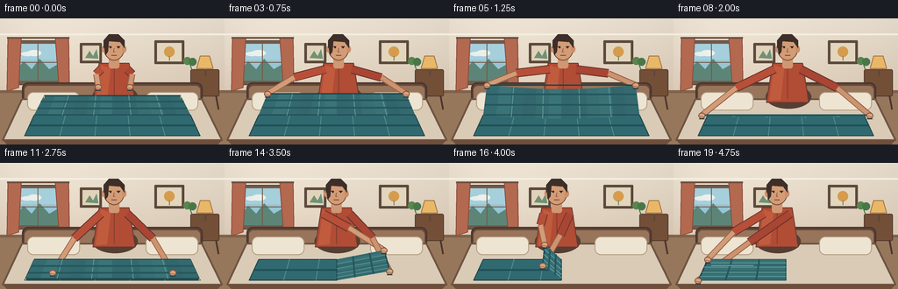
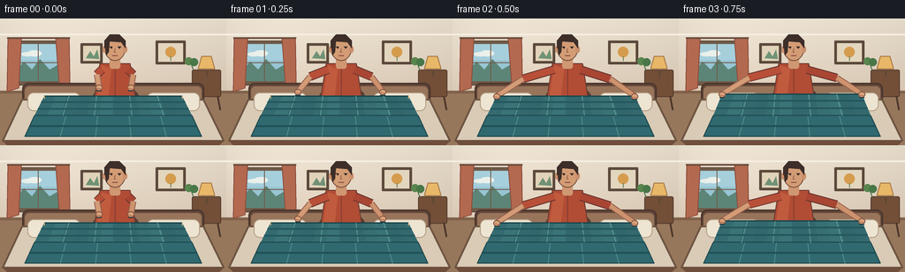

CODING AGENTS AS PIXEL WORLD MODELS
traex/GPT-5.6-Sol · motion_rationality_0051
点击播放 · 原生 RGB 像素
逐轮保存的候选
回放视频、检查图与代码变化。
每份候选均可单独播放。实际图片检查记录在下方工具轨迹中。
候选 01播放与检查图
点击播放 · 原生 RGB 像素


展开代码变化
--- 上一保存版本
+++ 本次保存版本
@@ -0,0 +1,258 @@
+from pathlib import Path
+import math
+import numpy as np
+from PIL import Image, ImageDraw
+import artifact_io
+
+W, H, N = 256, 144, 20
+S = 4
+rng = np.random.default_rng(51)
+
+
+def sc(v):
+ if isinstance(v, (tuple, list)):
+ return tuple(int(round(x*S)) for x in v)
+ return int(round(v*S))
+
+
+def poly(d, pts, fill, outline=None, width=1):
+ d.polygon([sc(p) for p in pts], fill=fill)
+ if outline:
+ d.line([sc(p) for p in pts+[pts[0]]], fill=outline, width=sc(width), joint='curve')
+
+
+def ellipse(d, box, fill, outline=None, width=1):
+ d.ellipse(sc(box), fill=fill, outline=outline, width=sc(width) if outline else 1)
+
+
+def line(d, pts, fill, width=1):
+ d.line([sc(p) for p in pts], fill=fill, width=sc(width), joint='curve')
+
+
+def smooth(x):
+ x = max(0.0, min(1.0, x))
+ return x*x*(3-2*x)
+
+
+def lerp(a,b,t): return a+(b-a)*t
+
+def mix(c1,c2,t): return tuple(int(lerp(a,b,t)) for a,b in zip(c1,c2))
+
+
+def background():
+ # softly lit bedroom, created directly at supersampled resolution
+ h, w = H*S, W*S
+ yy, xx = np.mgrid[0:h, 0:w]
+ y = yy / S
+ x = xx / S
+ wall = np.empty((h,w,3), dtype=np.float32)
+ top = np.array([236,226,210.], dtype=np.float32)
+ bot = np.array([216,198,177.], dtype=np.float32)
+ t = np.clip(y/105,0,1)[...,None]
+ wall[:] = top*(1-t)+bot*t
+ # gentle light from the left window and slight vignette
+ glow = 9*np.exp(-((x-43)**2/(2*55**2)+(y-35)**2/(2*48**2)))
+ vign = 7*((x-W/2)/(W/2))**2 + 3*((y-H/2)/(H/2))**2
+ wall += glow[...,None]-vign[...,None]
+ noise = rng.normal(0,0.7,(h,w,1))
+ wall += noise
+ return Image.fromarray(np.clip(wall,0,255).astype(np.uint8),'RGB')
+
+BASE_BG = background()
+
+def draw_room(im, d):
+ # wall/floor boundary and crown trim
+ d.rectangle(sc((0,82,256,144)), fill=(151,119,91))
+ d.rectangle(sc((0,82,256,85)), fill=(128,98,74))
+ line(d, [(0,18),(256,18)], (245,238,226), 2)
+ # framed window, sky and curtains
+ d.rounded_rectangle(sc((14,25,72,76)), radius=sc(2), fill=(112,91,73), outline=(91,70,55), width=sc(1))
+ d.rectangle(sc((18,29,68,71)), fill=(152,197,211))
+ # sky gradient bands, cloud and distant trees
+ d.rectangle(sc((18,29,68,47)), fill=(166,207,220))
+ ellipse(d,(24,38,38,43),(231,238,232)); ellipse(d,(31,36,47,43),(235,240,235))
+ poly(d,[(18,59),(27,49),(36,58),(45,46),(56,58),(68,51),(68,71),(18,71)],(93,133,119))
+ line(d,[(43,29),(43,71)],(112,91,73),1); line(d,[(18,50),(68,50)],(112,91,73),1)
+ # curtains
+ poly(d,[(9,22),(24,22),(21,79),(8,83)],(179,105,79),(139,75,61),1)
+ poly(d,[(63,22),(78,22),(79,82),(67,75)],(179,105,79),(139,75,61),1)
+ line(d,[(8,22),(79,22)],(107,78,63),2)
+ # picture frames
+ d.rounded_rectangle(sc((91,28,116,51)), radius=sc(1), fill=(91,73,59))
+ d.rectangle(sc((94,31,113,48)), fill=(225,211,186))
+ poly(d,[(97,45),(102,37),(106,43),(110,35),(112,46)],(111,146,117))
+ d.rounded_rectangle(sc((176,25,210,52)), radius=sc(1), fill=(91,73,59))
+ d.rectangle(sc((179,28,207,49)), fill=(227,214,191))
+ ellipse(d,(187,32,199,44),(213,156,78)); line(d,[(193,43),(193,48)],(102,129,83),1)
+ # bedside table and warm lamp at right
+ d.rounded_rectangle(sc((217,58,250,89)), radius=sc(2), fill=(115,79,56), outline=(84,58,44), width=sc(1))
+ line(d,[(221,88),(219,104)],(76,55,44),2); line(d,[(246,88),(249,104)],(76,55,44),2)
+ poly(d,[(224,57),(243,57),(239,43),(228,43)],(232,184,104),(164,116,66),1)
+ line(d,[(234,58),(234,66)],(96,71,53),2)
+ # small plant
+ line(d,[(219,59),(215,48)],(66,105,67),1)
+ ellipse(d,(209,44,218,53),(89,133,78)); ellipse(d,(215,45,224,54),(72,119,72))
+ # headboard behind person and bed frame shadow
+ d.rounded_rectangle(sc((25,73,231,113)), radius=sc(7), fill=(102,73,58), outline=(76,55,46), width=sc(2))
+ d.rounded_rectangle(sc((28,77,228,113)), radius=sc(5), fill=(151,116,90))
+
+
+def draw_person(d, f, handL, handR, body_dx=0):
+ bx = 130 + body_dx
+ # soft cast shadow behind person
+ ellipse(d,(bx-25,76,bx+27,103),(87,62,51))
+ # torso behind arms: shirt with simple fabric highlights
+ poly(d,[(bx-17,51),(bx+17,51),(bx+24,96),(bx-24,96)],(177,76,53),(104,57,48),1)
+ poly(d,[(bx-15,53),(bx-4,57),(bx-8,93),(bx-21,94)],(193,91,62))
+ line(d,[(bx,57),(bx,92)],(129,61,50),1)
+ # neck
+ d.rounded_rectangle(sc((bx-6,42,bx+6,57)), radius=sc(3), fill=(207,151,114))
+ # arms: shoulders -> elbows -> hands. Long natural arcs emphasize hand-object contact.
+ shoulderL=(bx-15,58); shoulderR=(bx+15,58)
+ # elbow placement tracks target, staying outward and above the bed
+ elbowL=(lerp(shoulderL[0],handL[0],.48)-4, lerp(shoulderL[1],handL[1],.48)-4)
+ elbowR=(lerp(shoulderR[0],handR[0],.48)+4, lerp(shoulderR[1],handR[1],.48)-4)
+ # sleeves, outlined for readable silhouette
+ line(d,[shoulderL,elbowL],(101,53,46),10); line(d,[shoulderL,elbowL],(184,79,56),8)
+ line(d,[shoulderR,elbowR],(101,53,46),10); line(d,[shoulderR,elbowR],(169,69,51),8)
+ # forearms
+ line(d,[elbowL,handL],(153,99,77),7); line(d,[elbowL,handL],(211,156,119),5)
+ line(d,[elbowR,handR],(153,99,77),7); line(d,[elbowR,handR],(205,147,110),5)
+ # face and ears
+ ellipse(d,(bx-12,19,bx+12,48),(211,156,117),(114,76,60),1)
+ ellipse(d,(bx-14,31,bx-9,39),(203,144,109)); ellipse(d,(bx+9,31,bx+14,39),(203,144,109))
+ # hair cap and side locks
+ poly(d,[(bx-12,34),(bx-12,25),(bx-6,18),(bx+5,18),(bx+12,25),(bx+12,34),(bx+7,27),(bx-6,26)],(61,46,41))
+ poly(d,[(bx-12,27),(bx-10,42),(bx-7,38),(bx-6,26)],(61,46,41))
+ # face details and focused expression
+ line(d,[(bx-7,32),(bx-3,32)],(73,54,47),1); line(d,[(bx+3,32),(bx+7,32)],(73,54,47),1)
+ ellipse(d,(bx-5,32,bx-3,34),(46,40,37)); ellipse(d,(bx+4,32,bx+6,34),(46,40,37))
+ line(d,[(bx,34),(bx-1,38),(bx+1,38)],(148,96,77),1)
+ line(d,[(bx-3,42),(bx+3,42)],(130,68,62),1)
+ # hands last, fingers visibly curled over blanket edge
+ for hx,hy in (handL,handR):
+ ellipse(d,(hx-4,hy-3,hx+4,hy+4),(218,163,123),(139,91,71),1)
+ line(d,[(hx-2,hy+1),(hx+2,hy+2)],(173,115,89),1)
+
+
+def blanket_base(d):
+ # mattress and sheet visible around blanket
+ poly(d,[(25,92),(230,92),(253,139),(3,139)],(217,203,181),(110,85,67),2)
+ poly(d,[(3,139),(253,139),(248,144),(8,144)],(111,78,60))
+ # pillow corners behind blanket
+ d.rounded_rectangle(sc((31,84,91,105)),radius=sc(7),fill=(238,228,210),outline=(178,157,132),width=sc(1))
+ d.rounded_rectangle(sc((166,84,226,105)),radius=sc(7),fill=(238,228,210),outline=(178,157,132),width=sc(1))
+
+BLANKET=(48,105,111); BLANKET_D=(31,76,83); BLANKET_L=(73,137,139)
+
+def quad_mesh(d, edge0, edge1, mode='first', lifted=0.0):
+ """Fabric between a fixed hinge edge0 and moving edge1, shaded in strips."""
+ strips=12
+ for i in range(strips):
+ u0=i/strips; u1=(i+1)/strips
+ def pt(edge,u):
+ (a,b)=edge
+ x=lerp(a[0],b[0],u); y=lerp(a[1],b[1],u)
+ # held corners, a soft gravitational sag in the middle
+ y += lifted*5.5*math.sin(math.pi*u)
+ return (x,y)
+ h0=pt(edge0,u0); h1=pt(edge0,u1)
+ m1=pt(edge1,u1); m0=pt(edge1,u0)
+ shade = 0.10*math.sin(i*1.65)+0.05*(i%2)
+ col=mix(BLANKET_D,BLANKET_L,.52+shade)
+ poly(d,[h0,h1,m1,m0],col)
+ # perimeter and woven check lines
+ poly(d,[edge0[0],edge0[1],edge1[1],edge1[0]],None if False else (0,0,0)) if False else None
+ line(d,[edge0[0],edge0[1]],BLANKET_D,1.2)
+ line(d,[edge1[0],edge1[1]],(26,70,77),1.5)
+ # longitudinal plaid ribs from hinge to moving edge
+ for u in (.18,.38,.62,.82):
+ a=(lerp(edge0[0][0],edge0[1][0],u),lerp(edge0[0][1],edge0[1][1],u)+lifted*5.5*math.sin(math.pi*u))
+ b=(lerp(edge1[0][0],edge1[1][0],u),lerp(edge1[0][1],edge1[1][1],u)+lifted*5.5*math.sin(math.pi*u))
+ line(d,[a,b],(92,153,151),1)
+ # broad stripe across fabric
+ for v in (.34,.69):
+ a=(lerp(edge0[0][0],edge1[0][0],v),lerp(edge0[0][1],edge1[0][1],v))
+ b=(lerp(edge0[1][0],edge1[1][0],v),lerp(edge0[1][1],edge1[1][1],v))
+ line(d,[a,b],(37,87,94),2)
+ # corner tassels
+ for p in edge1:
+ line(d,[p,(p[0],p[1]+3)],(221,181,117),1)
+
+
+def draw_blanket(d, f):
+ # first fold: far half is lifted by both top corners and folded toward viewer
+ p=smooth((f-2)/8)
+ if f <= 12:
+ hinge=((39,110),(217,110))
+ front=((28,134),(228,134))
+ # stationary near half
+ poly(d,[hinge[0],hinge[1],front[1],front[0]],BLANKET,(26,67,74),1)
+ # checks on stationary half
+ for u in (.2,.4,.6,.8):
+ line(d,[(lerp(39,217,u),110),(lerp(28,228,u),134)],(79,139,140),1)
+ line(d,[(34,122),(223,122)],(32,79,86),2)
+ # moving edge follows an arc; sag makes it behave like cloth rather than a board
+ y=lerp(88,132,p)-31*math.sin(math.pi*p)
+ left=(lerp(50,29,p),y); right=(lerp(206,227,p),y)
+ lift=math.sin(math.pi*p)
+ quad_mesh(d,hinge,(left,right),'first',lift)
+ return left,right,p
+ # second fold: right half swings over left around center seam
+ q=smooth((f-12)/7)
+ lefttop=(39,110); leftbot=(28,134); midtop=(128,110); midbot=(128,134)
+ poly(d,[lefttop,midtop,midbot,leftbot],BLANKET,(25,67,73),1)
+ # left stationary plaid
+ line(d,[(74,110),(67,134)],(80,142,142),1); line(d,[(108,110),(104,134)],(80,142,142),1)
+ line(d,[(34,122),(128,122)],(32,79,86),2)
+ # moving outer edge, with a vertical lift represented by an upward screen arc
+ etop=(lerp(217,39,q),110-18*math.sin(math.pi*q))
+ ebot=(lerp(228,28,q),134-18*math.sin(math.pi*q))
+ quad_mesh(d,(midtop,midbot),(etop,ebot),'second',math.sin(math.pi*q)*.5)
+ return etop,ebot,q
+
+
+def hand_positions(f):
+ if f < 3:
+ t=smooth(f/2)
+ return ((lerp(112,50,t),lerp(78,88,t)), (lerp(148,206,t),lerp(78,88,t)),0)
+ if f <= 10:
+ p=smooth((f-2)/8)
+ y=lerp(88,132,p)-31*math.sin(math.pi*p)
+ return ((lerp(50,29,p),y),(lerp(206,227,p),y),0)
+ if f <= 12:
+ t=smooth((f-10)/2)
+ # release and smooth the newly aligned fold
+ return ((lerp(29,91,t),lerp(132,118,t)),(lerp(227,167,t),lerp(132,118,t)),0)
+ q=smooth((f-12)/7)
+ etop=(lerp(217,39,q),110-18*math.sin(math.pi*q))
+ ebot=(lerp(228,28,q),134-18*math.sin(math.pi*q))
+ # both hands grasp the two right corners, torso leans with the fold
+ return (etop,ebot,-12*q)
+
+
+def render(f):
+ im=BASE_BG.copy(); d=ImageDraw.Draw(im)
+ draw_room(im,d)
+ blanket_base(d)
+ hL,hR,dx=hand_positions(f)
+ # Person is behind cloth, except forearms/hands. Drawing whole person now leaves the blanket
+ # to cover low arms naturally; redraw just hands after cloth for firm contact.
+ draw_person(d,f,hL,hR,dx)
+ edges=draw_blanket(d,f)
+ # re-emphasize hands on top of the cloth and gripping edge
+ for hx,hy in (hL,hR):
+ ellipse(d,(hx-4,hy-3,hx+4,hy+4),(218,163,123),(131,83,66),1)
+ line(d,[(hx-2.5,hy+1),(hx+2.5,hy+2)],(166,106,83),1)
+ # tiny fabric contact shadow under each hand
+ for hx,hy in (hL,hR):
+ line(d,[(hx-3,hy+4),(hx+3,hy+4)],(26,62,68),1)
+ # final smoothing palms in last frame read as completion
+ if f==19:
+ line(d,[(43,117),(91,117)],(104,168,164),1)
+ im=im.resize((W,H),Image.Resampling.LANCZOS)
+ return np.asarray(im,dtype=np.uint8)
+
+frames=np.stack([render(i) for i in range(N)],axis=0)
+artifact_io.save(frames,Path(__file__).resolve().parent)
+print('saved',frames.shape,frames.dtype,'range',frames.min(),frames.max())
可观测工具轨迹
实际执行的命令与返回图片。
命令 1exit 0
/bin/bash -lc "cat prompt.txt && printf '\\n---RULES---\\n' && cat GENERATION_RULES.md && printf '\\n---SPEC---\\n' && cat task_spec.json"
命令 2exit 0
/bin/bash -lc "find . -maxdepth 2 -type f -printf '%p\\n' | sort"
命令 3exit 0
/bin/bash -lc 'cat artifact_io.py'
命令 4exit 0
/bin/bash -lc "cat > generate.py <<'PY'
from pathlib import Path
import math
import numpy as np
from PIL import Image, ImageDraw
import artifact_io
W, H, N = 256, 144, 20
S = 4
rng = np.random.default_rng(51)
def sc(v):
if isinstance(v, (tuple, list)):
return tuple(int(round(x*S)) for x in v)
return int(round(v*S))
def poly(d, pts, fill, outline=None, width=1):
d.polygon([sc(p) for p in pts], fill=fill)
if outline:
d.line([sc(p) for p in pts+[pts[0]]], fill=outline, width=sc(width), joint='curve')
def ellipse(d, box, fill, outline=None, width=1):
d.ellipse(sc(box), fill=fill, outline=outline, width=sc(width) if outline else 1)
def line(d, pts, fill, width=1):
d.line([sc(p) for p in pts], fill=fill, width=sc(width), joint='curve')
def smooth(x):
x = max(0.0, min(1.0, x))
return x*x*(3-2*x)
def lerp(a,b,t): return a+(b-a)*t
def mix(c1,c2,t): return tuple(int(lerp(a,b,t)) for a,b in zip(c1,c2))
def background():
# softly lit bedroom, created directly at supersampled resolution
h, w = H*S, W*S
yy, xx = np.mgrid[0:h, 0:w]
y = yy / S
x = xx / S
wall = np.empty((h,w,3), dtype=np.float32)
top = np.array([236,226,210.], dtype=np.float32)
bot = np.array([216,198,177.], dtype=np.float32)
t = np.clip(y/105,0,1)[...,None]
wall[:] = top*(1-t)+bot*t
# gentle light from the left window and slight vignette
glow = 9*np.exp(-((x-43)**2/(2*55**2)+(y-35)**2/(2*48**2)))
vign = 7*((x-W/2)/(W/2))**2 + 3*((y-H/2)/(H/2))**2
wall += glow[...,None]-vign[...,None]
noise = rng.normal(0,0.7,(h,w,1))
wall += noise
return Image.fromarray(np.clip(wall,0,255).astype(np.uint8),'RGB')
BASE_BG = background()
def draw_room(im, d):
# wall/floor boundary and crown trim
d.rectangle(sc((0,82,256,144)), fill=(151,119,91))
d.rectangle(sc((0,82,256,85)), fill=(128,98,74))
line(d, [(0,18),(256,18)], (245,238,226), 2)
# framed window, sky and curtains
d.rounded_rectangle(sc((14,25,72,76)), radius=sc(2), fill=(112,91,73), outline=(91,70,55), width=sc(1))
d.rectangle(sc((18,29,68,71)), fill=(152,197,211))
# sky gradient bands, cloud and distant trees
d.rectangle(sc((18,29,68,47)), fill=(166,207,220))
ellipse(d,(24,38,38,43),(231,238,232)); ellipse(d,(31,36,47,43),(235,240,235))
poly(d,[(18,59),(27,49),(36,58),(45,46),(56,58),(68,51),(68,71),(18,71)],(93,133,119))
line(d,[(43,29),(43,71)],(112,91,73),1); line(d,[(18,50),(68,50)],(112,91,73),1)
# curtains
poly(d,[(9,22),(24,22),(21,79),(8,83)],(179,105,79),(139,75,61),1)
poly(d,[(63,22),(78,22),(79,82),(67,75)],(179,105,79),(139,75,61),1)
line(d,[(8,22),(79,22)],(107,78,63),2)
# picture frames
d.rounded_rectangle(sc((91,28,116,51)), radius=sc(1), fill=(91,73,59))
d.rectangle(sc((94,31,113,48)), fill=(225,211,186))
poly(d,[(97,45),(102,37),(106,43),(110,35),(112,46)],(111,146,117))
d.rounded_rectangle(sc((176,25,210,52)), radius=sc(1), fill=(91,73,59))
d.rectangle(sc((179,28,207,49)), fill=(227,214,191))
ellipse(d,(187,32,199,44),(213,156,78)); line(d,[(193,43),(193,48)],(102,129,83),1)
# bedside table and warm lamp at right
d.rounded_rectangle(sc((217,58,250,89)), radius=sc(2), fill=(115,79,56), outline=(84,58,44), width=sc(1))
line(d,[(221,88),(219,104)],(76,55,44),2); line(d,[(246,88),(249,104)],(76,55,44),2)
poly(d,[(224,57),(243,57),(239,43),(228,43)],(232,184,104),(164,116,66),1)
line(d,[(234,58),(234,66)],(96,71,53),2)
# small plant
line(d,[(219,59),(215,48)],(66,105,67),1)
ellipse(d,(209,44,218,53),(89,133,78)); ellipse(d,(215,45,224,54),(72,119,72))
# headboard behind person and bed frame shadow
d.rounded_rectangle(sc((25,73,231,113)), radius=sc(7), fill=(102,73,58), outline=(76,55,46), width=sc(2))
d.rounded_rectangle(sc((28,77,228,113)), radius=sc(5), fill=(151,116,90))
def draw_person(d, f, handL, handR, body_dx=0):
bx = 130 + body_dx
# soft cast shadow behind person
ellipse(d,(bx-25,76,bx+27,103),(87,62,51))
# torso behind arms: shirt with simple fabric highlights
poly(d,[(bx-17,51),(bx+17,51),(bx+24,96),(bx-24,96)],(177,76,53),(104,57,48),1)
poly(d,[(bx-15,53),(bx-4,57),(bx-8,93),(bx-21,94)],(193,91,62))
line(d,[(bx,57),(bx,92)],(129,61,50),1)
# neck
d.rounded_rectangle(sc((bx-6,42,bx+6,57)), radius=sc(3), fill=(207,151,114))
# arms: shoulders -> elbows -> hands. Long natural arcs emphasize hand-object contact.
shoulderL=(bx-15,58); shoulderR=(bx+15,58)
# elbow placement tracks target, staying outward and above the bed
elbowL=(lerp(shoulderL[0],handL[0],.48)-4, lerp(shoulderL[1],handL[1],.48)-4)
elbowR=(lerp(shoulderR[0],handR[0],.48)+4, lerp(shoulderR[1],handR[1],.48)-4)
# sleeves, outlined for readable silhouette
line(d,[shoulderL,elbowL],(101,53,46),10); line(d,[shoulderL,elbowL],(184,79,56),8)
line(d,[shoulderR,elbowR],(101,53,46),10); line(d,[shoulderR,elbowR],(169,69,51),8)
# forearms
line(d,[elbowL,handL],(153,99,77),7); line(d,[elbowL,handL],(211,156,119),5)
line(d,[elbowR,handR],(153,99,77),7); line(d,[elbowR,handR],(205,147,110),5)
# face and ears
ellipse(d,(bx-12,19,bx+12,48),(211,156,117),(114,76,60),1)
ellipse(d,(bx-14,31,bx-9,39),(203,144,109)); ellipse(d,(bx+9,31,bx+14,39),(203,144,109))
# hair cap and side locks
poly(d,[(bx-12,34),(bx-12,25),(bx-6,18),(bx+5,18),(bx+12,25),(bx+12,34),(bx+7,27),(bx-6,26)],(61,46,41))
poly(d,[(bx-12,27),(bx-10,42),(bx-7,38),(bx-6,26)],(61,46,41))
# face details and focused expression
line(d,[(bx-7,32),(bx-3,32)],(73,54,47),1); line(d,[(bx+3,32),(bx+7,32)],(73,54,47),1)
ellipse(d,(bx-5,32,bx-3,34),(46,40,37)); ellipse(d,(bx+4,32,bx+6,34),(46,40,37))
line(d,[(bx,34),(bx-1,38),(bx+1,38)],(148,96,77),1)
line(d,[(bx-3,42),(bx+3,42)],(130,68,62),1)
# hands last, fingers visibly curled over blanket edge
for hx,hy in (handL,handR):
ellipse(d,(hx-4,hy-3,hx+4,hy+4),(218,163,123),(139,91,71),1)
line(d,[(hx-2,hy+1),(hx+2,hy+2)],(173,115,89),1)
def blanket_base(d):
# mattress and sheet visible around blanket
poly(d,[(25,92),(230,92),(253,139),(3,139)],(217,203,181),(110,85,67),2)
poly(d,[(3,139),(253,139),(248,144),(8,144)],(111,78,60))
# pillow corners behind blanket
d.rounded_rectangle(sc((31,84,91,105)),radius=sc(7),fill=(238,228,210),outline=(178,157,132),width=sc(1))
d.rounded_rectangle(sc((166,84,226,105)),radius=sc(7),fill=(238,228,210),outline=(178,157,132),width=sc(1))
BLANKET=(48,105,111); BLANKET_D=(31,76,83); BLANKET_L=(73,137,139)
def quad_mesh(d, edge0, edge1, mode='first', lifted=0.0):
\"\"\"Fabric between a fixed hinge edge0 and moving edge1, shaded in strips.\"\"\"
strips=12
for i in range(strips):
u0=i/strips; u1=(i+1)/strips
def pt(edge,u):
(a,b)=edge
x=lerp(a[0],b[0],u); y=lerp(a[1],b[1],u)
# held corners, a soft gravitational sag in the middle
y += lifted*5.5*math.sin(math.pi*u)
return (x,y)
h0=pt(edge0,u0); h1=pt(edge0,u1)
m1=pt(edge1,u1); m0=pt(edge1,u0)
shade = 0.10*math.sin(i*1.65)+0.05*(i%2)
col=mix(BLANKET_D,BLANKET_L,.52+shade)
poly(d,[h0,h1,m1,m0],col)
# perimeter and woven check lines
poly(d,[edge0[0],edge0[1],edge1[1],edge1[0]],None if False else (0,0,0)) if False else None
line(d,[edge0[0],edge0[1]],BLANKET_D,1.2)
line(d,[edge1[0],edge1[1]],(26,70,77),1.5)
# longitudinal plaid ribs from hinge to moving edge
for u in (.18,.38,.62,.82):
a=(lerp(edge0[0][0],edge0[1][0],u),lerp(edge0[0][1],edge0[1][1],u)+lifted*5.5*math.sin(math.pi*u))
b=(lerp(edge1[0][0],edge1[1][0],u),lerp(edge1[0][1],edge1[1][1],u)+lifted*5.5*math.sin(math.pi*u))
line(d,[a,b],(92,153,151),1)
# broad stripe across fabric
for v in (.34,.69):
a=(lerp(edge0[0][0],edge1[0][0],v),lerp(edge0[0][1],edge1[0][1],v))
b=(lerp(edge0[1][0],edge1[1][0],v),lerp(edge0[1][1],edge1[1][1],v))
line(d,[a,b],(37,87,94),2)
# corner tassels
for p in edge1:
line(d,[p,(p[0],p[1]+3)],(221,181,117),1)
def draw_blanket(d, f):
# first fold: far half is lifted by both top corners and folded toward viewer
p=smooth((f-2)/8)
if f <= 12:
hinge=((39,110),(217,110))
front=((28,134),(228,134))
# stationary near half
poly(d,[hinge[0],hinge[1],front[1],front[0]],BLANKET,(26,67,74),1)
# checks on stationary half
for u in (.2,.4,.6,.8):
line(d,[(lerp(39,217,u),110),(lerp(28,228,u),134)],(79,139,140),1)
line(d,[(34,122),(223,122)],(32,79,86),2)
# moving edge follows an arc; sag makes it behave like cloth rather than a board
y=lerp(88,132,p)-31*math.sin(math.pi*p)
left=(lerp(50,29,p),y); right=(lerp(206,227,p),y)
lift=math.sin(math.pi*p)
quad_mesh(d,hinge,(left,right),'first',lift)
return left,right,p
# second fold: right half swings over left around center seam
q=smooth((f-12)/7)
lefttop=(39,110); leftbot=(28,134); midtop=(128,110); midbot=(128,134)
poly(d,[lefttop,midtop,midbot,leftbot],BLANKET,(25,67,73),1)
# left stationary plaid
line(d,[(74,110),(67,134)],(80,142,142),1); line(d,[(108,110),(104,134)],(80,142,142),1)
line(d,[(34,122),(128,122)],(32,79,86),2)
# moving outer edge, with a vertical lift represented by an upward screen arc
etop=(lerp(217,39,q),110-18*math.sin(math.pi*q))
ebot=(lerp(228,28,q),134-18*math.sin(math.pi*q))
quad_mesh(d,(midtop,midbot),(etop,ebot),'second',math.sin(math.pi*q)*.5)
return etop,ebot,q
def hand_positions(f):
if f < 3:
t=smooth(f/2)
return ((lerp(112,50,t),lerp(78,88,t)), (lerp(148,206,t),lerp(78,88,t)),0)
if f <= 10:
p=smooth((f-2)/8)
y=lerp(88,132,p)-31*math.sin(math.pi*p)
return ((lerp(50,29,p),y),(lerp(206,227,p),y),0)
if f <= 12:
t=smooth((f-10)/2)
# release and smooth the newly aligned fold
return ((lerp(29,91,t),lerp(132,118,t)),(lerp(227,167,t),lerp(132,118,t)),0)
q=smooth((f-12)/7)
etop=(lerp(217,39,q),110-18*math.sin(math.pi*q))
ebot=(lerp(228,28,q),134-18*math.sin(math.pi*q))
# both hands grasp the two right corners, torso leans with the fold
return (etop,ebot,-12*q)
def render(f):
im=BASE_BG.copy(); d=ImageDraw.Draw(im)
draw_room(im,d)
blanket_base(d)
hL,hR,dx=hand_positions(f)
# Person is behind cloth, except forearms/hands. Drawing whole person now leaves the blanket
# to cover low arms naturally; redraw just hands after cloth for firm contact.
draw_person(d,f,hL,hR,dx)
edges=draw_blanket(d,f)
# re-emphasize hands on top of the cloth and gripping edge
for hx,hy in (hL,hR):
ellipse(d,(hx-4,hy-3,hx+4,hy+4),(218,163,123),(131,83,66),1)
line(d,[(hx-2.5,hy+1),(hx+2.5,hy+2)],(166,106,83),1)
# tiny fabric contact shadow under each hand
for hx,hy in (hL,hR):
line(d,[(hx-3,hy+4),(hx+3,hy+4)],(26,62,68),1)
# final smoothing palms in last frame read as completion
if f==19:
line(d,[(43,117),(91,117)],(104,168,164),1)
im=im.resize((W,H),Image.Resampling.LANCZOS)
return np.asarray(im,dtype=np.uint8)
frames=np.stack([render(i) for i in range(N)],axis=0)
artifact_io.save(frames,Path(__file__).resolve().parent)
print('saved',frames.shape,frames.dtype,'range',frames.min(),frames.max())
PY
python generate.py
ls -lh pixels.npz index.html inspection.png frames/00.png frames/19.png"命令 5exit 0
/bin/bash -lc "python - <<'PY'
import numpy as np
from PIL import Image
from pathlib import Path
z=np.load('pixels.npz')['pixels']
print('pixels tensor:',z.shape,z.dtype)
print('frames:',len(list(Path('frames').glob('*.png'))))
for i in [0,4,8,12,16,19]:
im=Image.open(f'frames/{i:02d}.png')
print(i, im.mode, im.size)
PY"保存候选 1 份；完成命令 5 次；可验证图片返回 0 张。原始 API 响应与完整日志保留在本地。